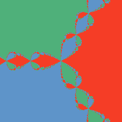

IV · Altaat · Basins
Newtonin fraktaali · Newton's Fractal

Newtonin menetelmä etsii polynomin nollakohtia parantamalla arvausta askel kerrallaan. Jokainen pikseli tässä kuvassa on yksi aloitusarvaus kompleksitasossa; väri kertoo, mihin juureen menetelmä siitä päätyy. Menetelmä itsessään ei ole kaoottinen sääntönä — mutta se, mihin juureen se päätyy, riippuu aloituspisteestä niin herkästi, että altaiden raja on fraktaali.
Newton's method finds a polynomial's roots by refining a guess one step at a time. Every pixel in this image is one starting guess in the complex plane; its color says which root the method lands on. The method itself isn't chaotic as a rule — but which root it lands on depends on the starting point so sensitively that the boundary between basins is a fractal.
Menetelmä · Method
Kolme valittavaa polynomia: f(z)=z³−1 (juuret 1, −½+i√3/2, −½−i√3/2), f(z)=z⁴−1 (juuret ±1, ±i), f(z)=z⁵−z (juuret 0, ±1, ±i). 60 iteraatiota pikseliä kohti — Newtonin menetelmä suppenee neliöllisesti, joten useimmat pisteet löytävät juurensa alle 20 iteraatiossa; rajalla olevat pisteet vielä "kimpoilevat" 60 iteraationkin jälkeen, mikä on itse asiassa syy sille, että raja on fraktaali, ei laskentavirhe.
Three selectable polynomials: f(z)=z³−1 (roots 1, −½+i√3/2, −½−i√3/2), f(z)=z⁴−1 (roots ±1, ±i), f(z)=z⁵−z (roots 0, ±1, ±i). 60 iterations per pixel — Newton's method converges quadratically, so most points find their root in under 20 iterations; points on the boundary are still "bouncing" even after 60, which is precisely why the boundary is fractal, not a computation error.
Laskettu WebGL2-fragmenttivarjostimessa, yksöistarkkuus. Mitattu (100 satunnaista testipistettä kutakin polynomia kohti, verrattuna kaksoistarkkuuden CPU-malliin): 99/100 (z³−1), 96/100 (z⁴−1), 100/100 (z⁵−z) — kaikki ylittävät 95 %:n tavoitteen. Erimielisyydet osuivat, kuten Näytteessä 010, altaiden rajoille.
Computed in a WebGL2 fragment shader, single precision. Measured (100 random test points per polynomial, against the double-precision CPU model): 99/100 (z³−1), 96/100 (z⁴−1), 100/100 (z⁵−z) — all above the 95% target. The disagreements landed on basin boundaries, same as Näyte 010.
Napauta lähellä värialueiden rajaa: valkoinen rata ja sen oranssi kaksonen — vain miljoonasosan päässä toisistaan alussa — voivat päätyä täysin eri juureen.
Click near a color boundary: the white path and its orange twin — starting only a millionth apart — can end up at completely different roots.